Brand & UX Designer · 2025–2026
Andy Electric
Branding · Site web · Génération de leads · USA
J'ai travaillé en tant que Brand & UX Designer avec une approche end-to-end, en intégrant des outils d'intelligence artificielle (Claude Code, Figma) pour accélérer la production et optimiser la cohérence entre conception UX et implémentation technique.
- Analyse du positionnement de l'entreprise et de ses besoins business.
- Définition d'une nouvelle direction artistique et stratégique.
- Conception de l'identité visuelle et de ses déclinaisons.
- Structuration de l'architecture du site web.
- Design des interfaces et des contenus.
- Mise en place des éléments de conversion (contact, messaging).
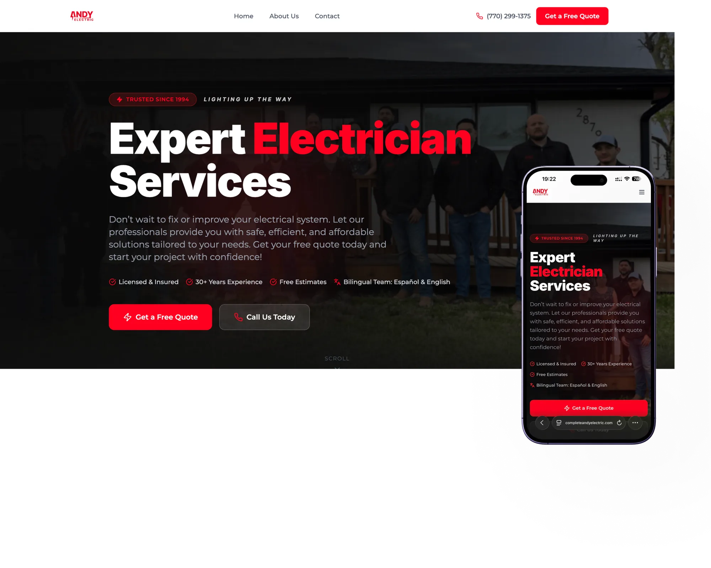
Contexte
Le secteur des services électriques aux États-Unis représente plusieurs milliards de dollars et reste majoritairement dominé par des acteurs locaux avec une faible maturité digitale.
- +80 % des clients recherchent des services locaux en ligne avant de contacter une entreprise.
- La première impression digitale influence fortement la confiance et la décision de contact.
- Une présence web optimisée peut augmenter significativement la génération de leads.
Dans ce contexte, l'absence d'un site structuré et d'une identité de marque forte représentait une perte d'opportunités business importante pour Andy Electric.
Point de départ
Clients sur les 30 dernières années.
Présence digitale au lancement.
Part du marché adressable en ligne.
D'expérience dans le secteur.
Des leads provenant du bouche-à-oreille.
Des clients sans accès digital à l'entreprise.
Une approche orientée impact
Le projet a été mené avec une approche structurée :
- Analyse du contexte et des besoins business
- Identification des opportunités d'amélioration
- Définition d'une stratégie de marque et produit
- Conception et itération des solutions
- Déploiement des livrables
Objectif : améliorer la perception de la marque et générer des opportunités commerciales.
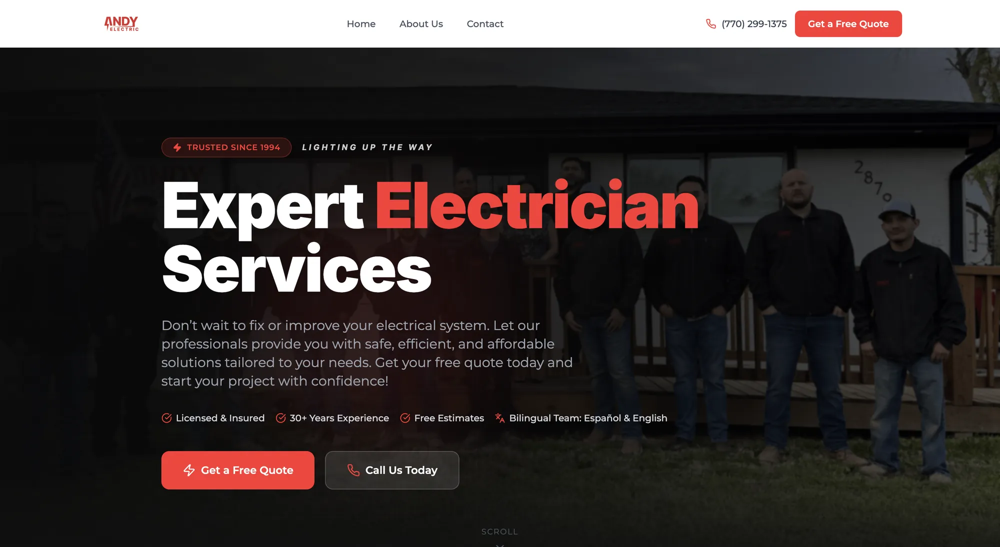
Créer un canal d'acquisition et de conversion
L'entreprise ne disposait pas d'un site structuré permettant de présenter ses services et convertir ses visiteurs. J'ai conçu et développé un site web avec une approche centrée sur la clarté de l'offre, la mise en confiance et la conversion utilisateur.
- Présentation détaillée des services
- Mise en avant des +30 ans d'expérience
- Galerie de projets réalisés
- Page "About Us" pour renforcer la transparence
- Intégration de points de contact (formulaire, téléphone)
Le site devient ainsi un véritable point d'entrée pour les clients potentiels.
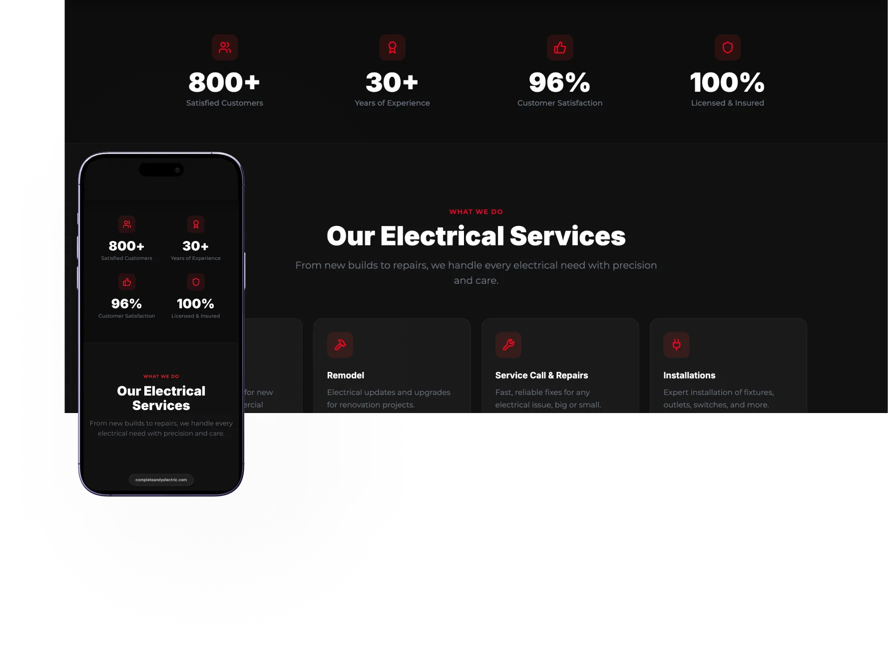
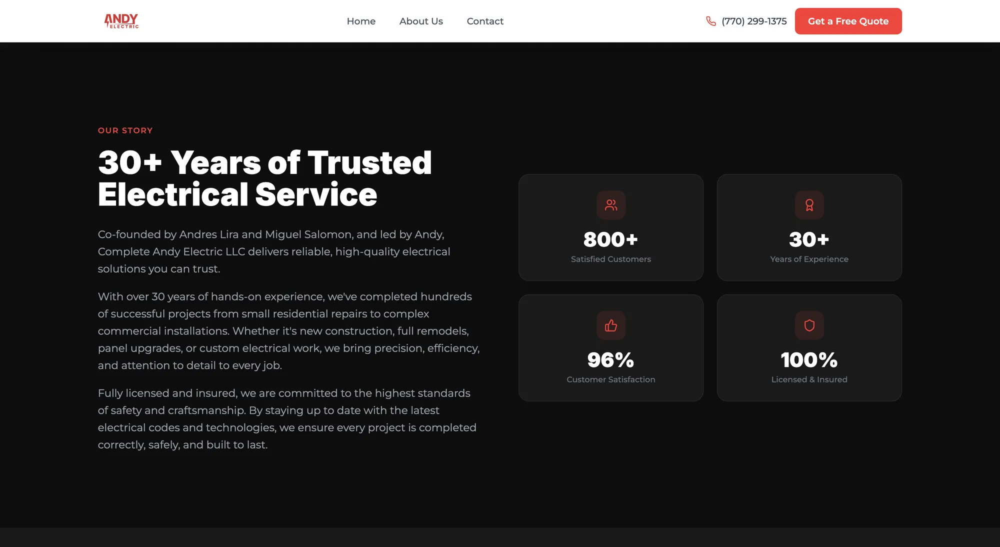
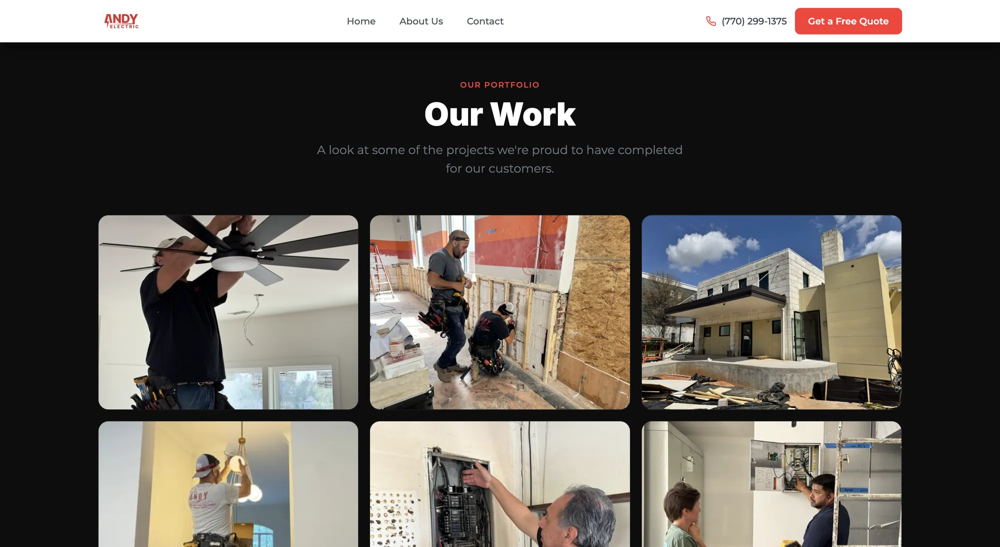
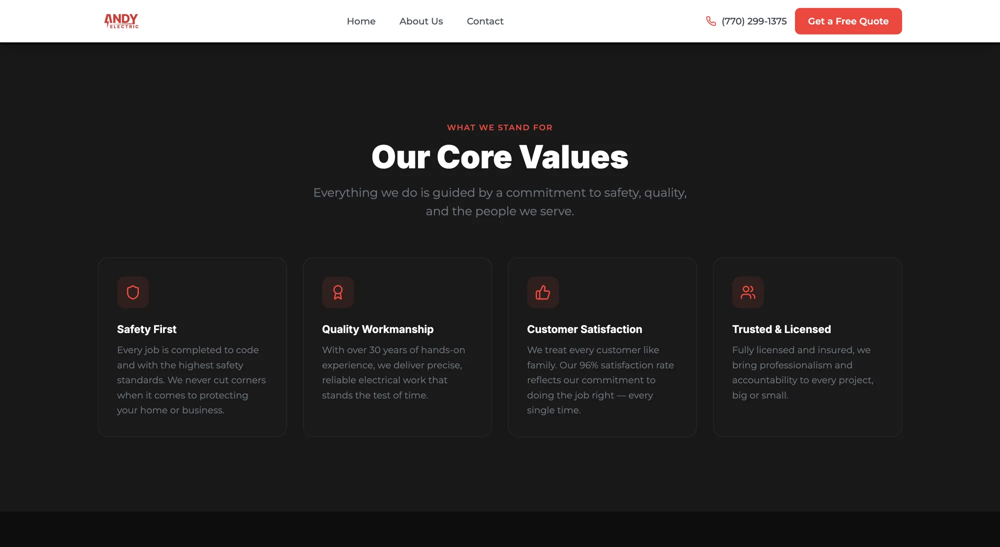
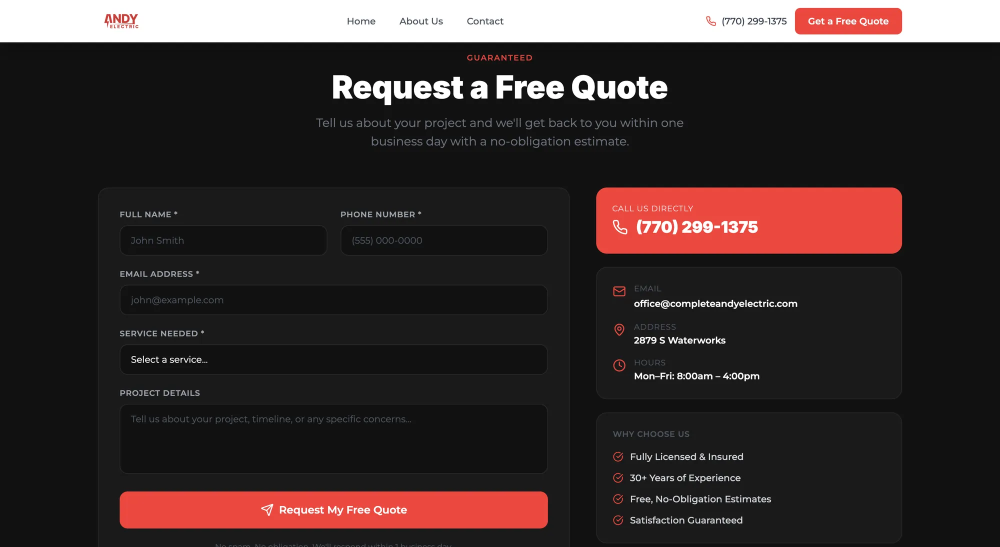
Résultats et valeur apportée
Identité visuelle cohérente sur l'ensemble des points de contact (online & offline)
Optimisation du temps de production grâce à l'intégration d'outils d'IA
Structuration complète de l'offre de services en contenu digital
Prises de rendez-vous générées durant les 8 premiers jours après la mise en ligne
Points de contact clés (formulaire, téléphone, CTA) pour faciliter la conversion
Accès direct aux informations essentielles
Repenser l'identité pour renforcer la crédibilité
L'identité visuelle a été entièrement repensée pour refléter le professionnalisme, la fiabilité et le dynamisme d'Andy Electric — des valeurs clés pour gagner la confiance des clients dans le secteur des services électriques.
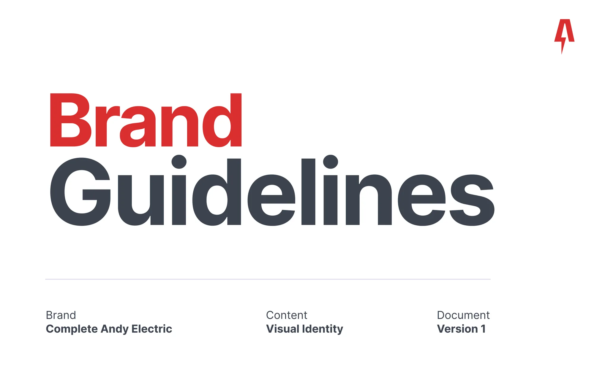
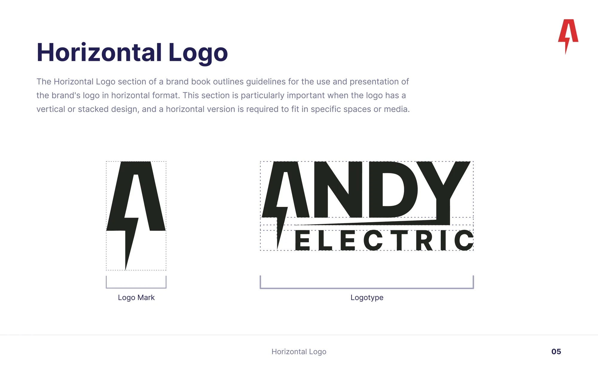
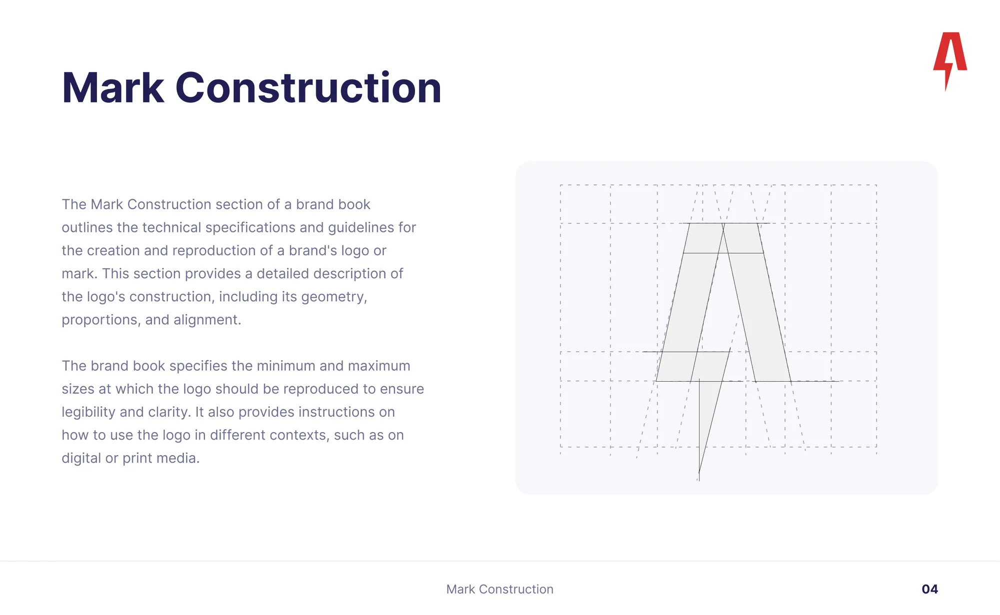
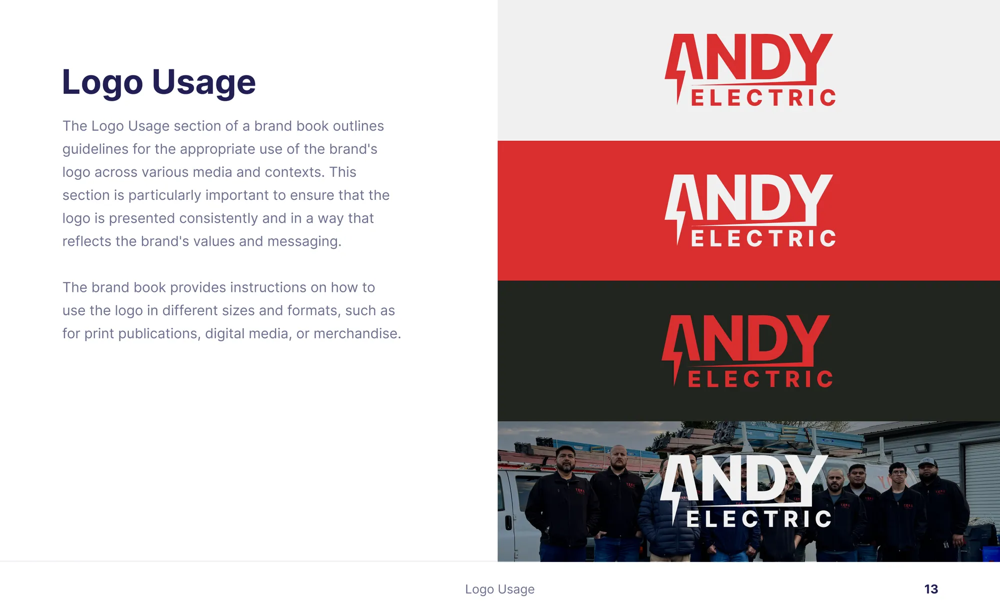
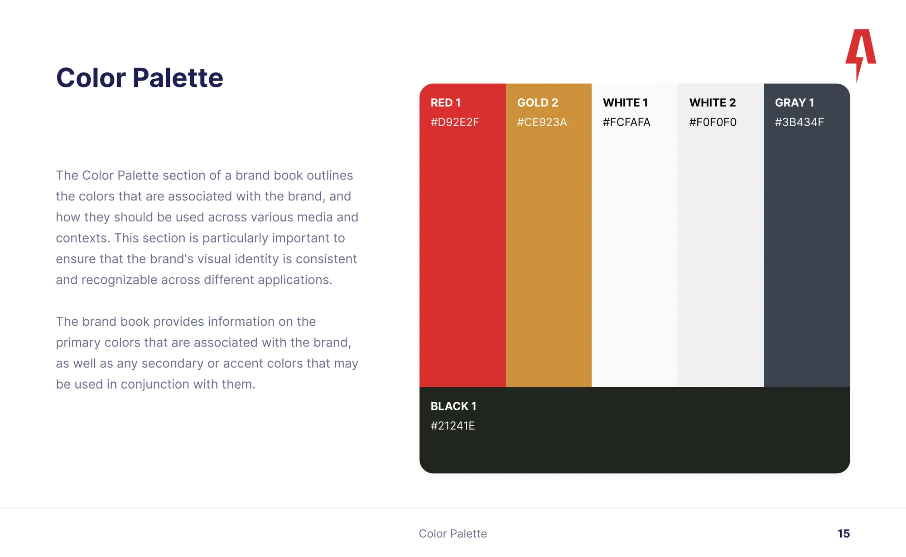
Application de la marque
La nouvelle identité a été déclinée sur l'ensemble des supports : uniformes, véhicules, signalétique et communications digitales — garantissant une cohérence totale sur tous les points de contact.
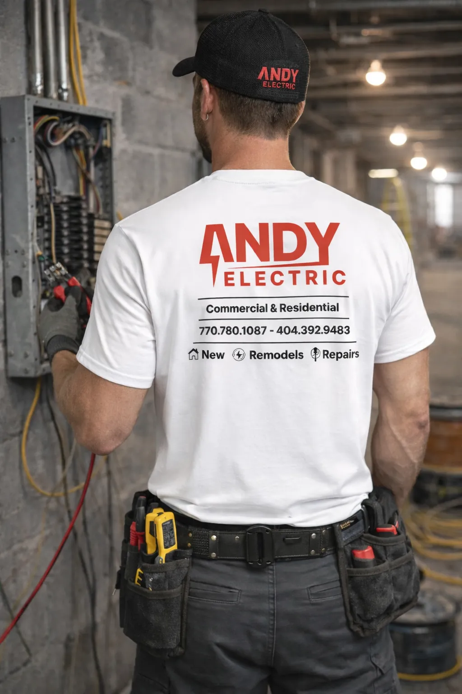
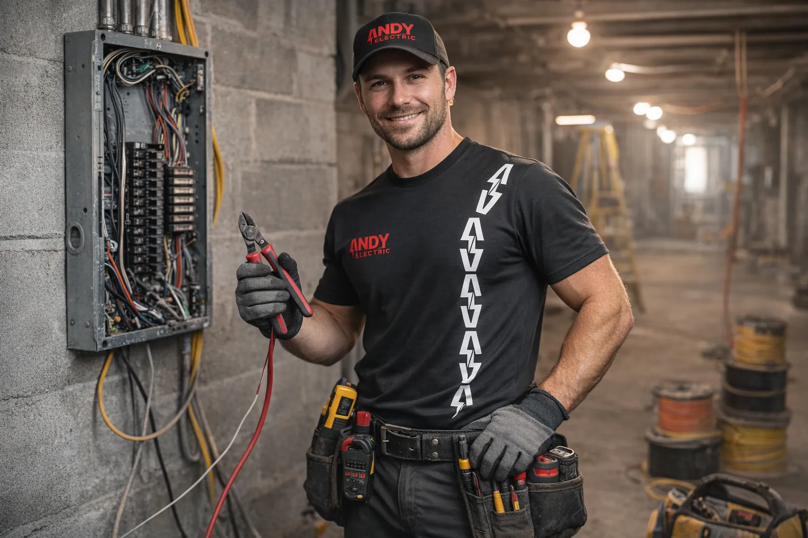
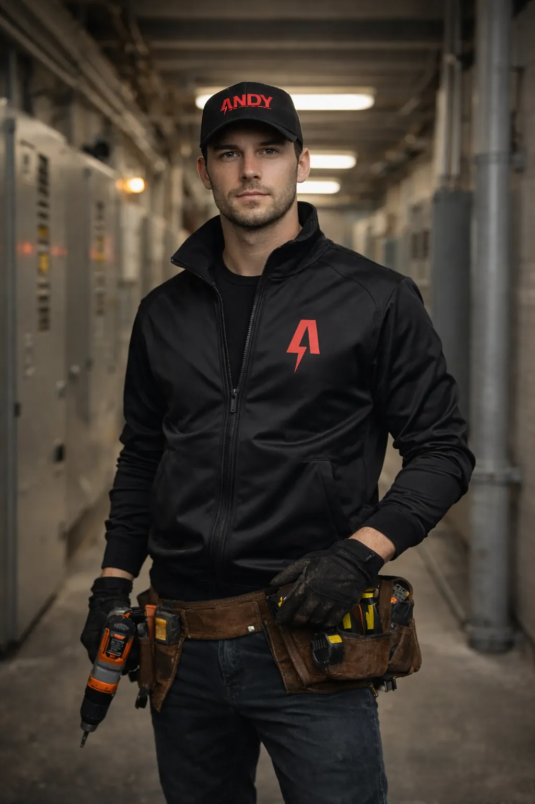